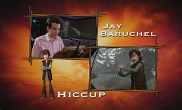

Bonus Information about the Film
*How To Train Your Dragon* (2010) is not just an extraordinary animated film filled with action and adventure—it's a cinematic masterpiece with a deep, rich backstory and numerous interesting facts that make it even more enjoyable. Here, we share some of the bonus information that you might not know about the film's creation, characters, and the world of Berk.
Fun Facts About the Film
- The Dragons' Designs: The filmmakers worked closely with dragon experts to design the creatures. Every dragon was created with a distinct personality, and their designs were inspired by various animals, birds, and reptiles. For example, Toothless' design combines traits of cats, reptiles, and even bats!
- Research Inspiration: The film's creators spent time studying real-life animals and their movements to accurately depict the dragons in flight. For instance, the way Toothless moves is influenced by the agile nature of felines.
- Oscar Nominations: *How To Train Your Dragon* received multiple Oscar nominations, including Best Animated Feature. It was praised for its stunning animation and innovative use of 3D technology.
- Voice Casting: Jay Baruchel (Hiccup) wasn't initially a fan of animation, but he fell in love with the script. His unique voice made Hiccup an unforgettable character.
Behind-the-Scenes Details

- Animation Style: The animation team used cutting-edge technology to create breathtaking visuals, particularly during the dragon flight scenes. The 3D effect helped create the sense of immersion for the audience, making them feel like they were soaring alongside the dragons.
- Motion Capture: While *How To Train Your Dragon* didn't use full motion capture, the animators studied the movements of real animals to create lifelike dragon movements, especially for the flying sequences.
- Story Evolution: The movie was initially going to be more action-oriented, but it evolved into a story about friendship and understanding. The filmmakers wanted to focus on Hiccup's bond with Toothless and how their friendship challenged the traditional views of the Vikings toward dragons.
Inspirations for the world of Berk
The island of Berk was designed with inspiration from the Nordic landscapes. The team visited Norway to get a sense of the environment, incorporating fjords, rocky mountains, and lush greenery into the world. They used these natural features to create a Viking world that felt authentic but still magical enough for dragons to exist.
Sequel and Spin-off Potential
*How To Train Your Dragon* became so popular that it led to two sequels and an entire franchise. The story of Hiccup and Toothless continues in *How To Train Your Dragon 2* (2014) and *How To Train Your Dragon: The Hidden World* (2019), which explore their growth, challenges, and new adventures.
The franchise also includes a TV series, *Dragons: Race to the Edge*, which further expands on the world of Berk and the relationships between humans and dragons.